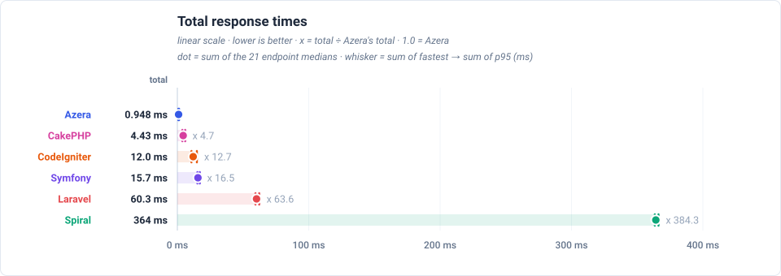

Latency by endpoint (ms, trimmed mean — lower is better) (sub-line: boot + handle + post-response cleanup, which sum to the total) — every row and chart point adds the worker's boot (warm recycle), so each number is the full time one request keeps that worker busy
| Request | Workload | Azera | Laravel | Symfony | Spiral | CodeIgniter | CakePHP |
|---|---|---|---|---|---|---|---|
GET / | no DB — routing + template only | 0.017 0.001+0.015+0.001 | 2.73 2.52+0.21+0.00 | 0.670 0.582+0.086+0.002 | 17.3 17.0+0.3+0.0 | 0.463 0.000+0.454+0.009 | 0.147 0.007+0.140+0.000 |
GET /items | 20 of 1000 items (page 1, + COUNT) | 0.140 0.001+0.136+0.003 | 3.25 2.51+0.74+0.00 | 1.11 0.58+0.53+0.00 | 17.5 17.0+0.5+0.0 | 0.749 0.000+0.737+0.012 | 0.514 0.007+0.507+0.000 |
GET /items/1 | 1 item by id | 0.052 0.001+0.049+0.002 | 2.90 2.52+0.38+0.00 | 0.752 0.582+0.168+0.002 | 17.4 17.0+0.4+0.0 | 0.659 0.000+0.647+0.012 | 0.329 0.007+0.322+0.000 |
POST /items | 1 row upserted (sentinel #999999) | 0.106 0.001+0.103+0.002 | 2.93 2.52+0.41+0.00 | 0.848 0.582+0.263+0.003 | 17.4 17.0+0.4+0.0 | 0.730 0.000+0.718+0.012 | 0.433 0.007+0.426+0.000 |
GET /items-qb | 20 of 1000 items (page 1, + COUNT) | 0.095 0.001+0.093+0.001 | 2.95 2.52+0.43+0.00 | 0.814 0.583+0.229+0.002 | 17.4 17.0+0.4+0.0 | 0.736 0.000+0.724+0.012 | 0.302 0.007+0.295+0.000 |
GET /items-qb/1 | 1 item by id | 0.050 0.001+0.048+0.001 | 2.82 2.51+0.31+0.00 | 0.717 0.583+0.132+0.002 | 17.3 17.0+0.3+0.0 | 0.647 0.000+0.635+0.012 | 0.234 0.007+0.227+0.000 |
POST /items-qb | 1 row upserted (sentinel #999997) | 0.083 0.001+0.081+0.001 | 2.91 2.51+0.40+0.00 | 0.859 0.582+0.274+0.003 | 17.4 17.0+0.4+0.0 | 0.839 0.000+0.826+0.013 | 0.309 0.007+0.302+0.000 |
GET /api/items | 20 of 1000 items as JSON | 0.042 0.001+0.040+0.001 | 3.13 2.52+0.61+0.00 | 0.814 0.582+0.230+0.002 | 17.4 17.0+0.4+0.0 | 0.600 0.000+0.590+0.010 | 0.275 0.007+0.268+0.000 |
GET /api/items/1 | 1 item by id as JSON | 0.038 0.001+0.036+0.001 | 2.92 2.51+0.41+0.00 | 0.727 0.582+0.143+0.002 | 17.3 17.0+0.3+0.0 | 0.573 0.000+0.562+0.011 | 0.243 0.007+0.236+0.000 |
POST /api/items | 1 row upserted (sentinel #999998) | 0.053 0.001+0.050+0.002 | 2.86 2.52+0.34+0.00 | 0.821 0.583+0.236+0.002 | 17.4 17.0+0.4+0.0 | 0.648 0.000+0.637+0.011 | 0.335 0.007+0.328+0.000 |
GET /features/aop | no DB — interceptor pipeline | 0.128 0.001+0.126+0.001 | 2.84 2.52+0.32+0.00 | 0.805 0.582+0.221+0.002 | 17.5 17.0+0.5+0.0 | — | — |
GET /features/cache | no DB — cache round-trips | 0.014 0.001+0.012+0.001 | 2.76 2.52+0.24+0.00 | 0.667 0.583+0.082+0.002 | 17.3 17.0+0.3+0.0 | 0.404 0.000+0.396+0.008 | 0.111 0.007+0.104+0.000 |
GET /features/log | no DB — buffered log handlers | 0.014 0.001+0.012+0.001 | 2.74 2.52+0.22+0.00 | 0.663 0.583+0.078+0.002 | 17.3 17.0+0.3+0.0 | — | — |
GET /features/retry | no DB — retry policy | 0.011 0.001+0.009+0.001 | 2.75 2.52+0.23+0.00 | 0.668 0.583+0.083+0.002 | 17.3 17.0+0.3+0.0 | — | — |
GET /features/pipeline | no DB — middleware pipeline | 0.015 0.001+0.013+0.001 | 2.74 2.52+0.22+0.00 | 0.665 0.583+0.080+0.002 | 17.3 17.0+0.3+0.0 | — | — |
GET /features/db-events | 1 event row INSERTed per request | 0.050 0.001+0.048+0.001 | 2.91 2.52+0.39+0.00 | 0.782 0.582+0.198+0.002 | 17.5 17.0+0.5+0.0 | 0.733 0.000+0.721+0.012 | 0.265 0.007+0.258+0.000 |
GET /features/events | no DB — in-process listeners | 0.040 0.001+0.038+0.001 | 2.82 2.52+0.30+0.00 | 0.696 0.583+0.111+0.002 | 17.4 17.0+0.4+0.0 | 0.695 0.000+0.683+0.012 | 0.157 0.007+0.150+0.000 |
GET /features/validation | no DB — validator run | 0.019 0.001+0.017+0.001 | 3.36 2.51+0.85+0.00 | 0.775 0.583+0.190+0.002 | 17.3 17.0+0.3+0.0 | 0.664 0.000+0.651+0.013 | 0.195 0.007+0.188+0.000 |
GET /features/config | no DB — config lookup | 0.010 0.001+0.008+0.001 | 2.74 2.51+0.23+0.00 | 0.664 0.582+0.080+0.002 | 17.3 17.0+0.3+0.0 | 0.418 0.000+0.410+0.008 | 0.102 0.007+0.095+0.000 |
GET /features/request-scoped | no DB — scoped service resolve | 0.010 0.001+0.008+0.001 | 2.73 2.51+0.22+0.00 | 0.663 0.583+0.078+0.002 | 17.3 17.0+0.3+0.0 | 0.407 0.000+0.399+0.008 | 0.102 0.007+0.095+0.000 |
GET /features/rate-limit | no DB — cache-backed limiter | 0.011 0.001+0.009+0.001 | 2.76 2.51+0.25+0.00 | 0.672 0.583+0.087+0.002 | 17.3 17.0+0.3+0.0 | 0.409 0.000+0.401+0.008 | 0.114 0.007+0.107+0.000 |